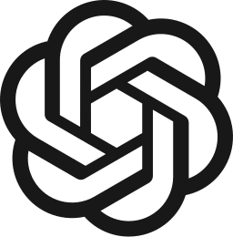
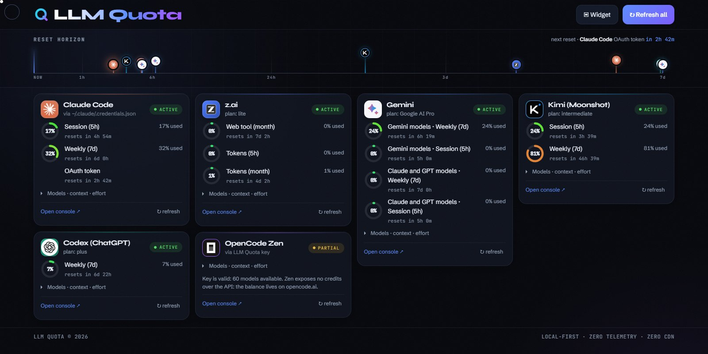

Reset horizon
Every currently measurable provider reset on one axis, now to seven days. Hover a marker and its card lights up; hover a card and its marker does.
Local-first · MIT · Bun
Every provider rate-limits you on its own clock, in its own console. LLM Quota reads the CLI logins and usage history already on your disk, then keeps every reset and your local token spend live without page reloads.
Windows macOS Apple silicon macOS Intel Linux .deb
No Bun, no clone, no terminal: the server ships inside it. Or run it from source —
git clone https://github.com/SandroHub013/llm-quota && cd llm-quota && bun install && bun start
Needs Bun 1.0+ · then open localhost:4747

Codex Gemini
GeminiClaude Code has a 5-hour window and a weekly cap. Codex has its own. Gemini counts per model. When you actually hit a limit, "62% used" tells you nothing you can plan around.
When am I back?
Every currently measurable provider reset on one axis, now to seven days. Hover a marker and its card lights up; hover a card and its marker does.
Quotas refresh silently every minute, spend every five seconds, and countdowns keep moving locally. Unchanged data does not repaint the UI.
Uses codex app-server and opt-in status-line bridges for Claude and
Antigravity. It never reads or refreshes another client's OAuth token.
Real CLI history becomes model, effort, cache-reuse, daily token, and estimated API-equivalent spend detail — including a count-up total.
No cloud, no database, no account. Keys and tokens never leave the machine, and there is no server to report to.
Fonts and provider logos ship with the app. No CDN, no font host, no favicon service — enforced by a test, not a promise.
Sanitized JSON and meaningful exit codes, so an agent can check its own budget before starting a long job.
The always-on-top widget runs on Windows, macOS and Linux. It follows the dashboard's local server automatically and keeps provider cards, local spend, and available reset countdowns current.
Quota cards plus local developer activity, one reset horizon, a live status, and a spend total that counts smoothly to every new value.
Current interface rendered with synthetic sample data.

Nothing is uploaded. Official clients own their credentials; bridge caches contain only quota windows and reset times, never account identity, transcripts, or tokens.
| Provider | Supported source | What you get |
|---|---|---|
| Claude Code | Official status-line JSON (opt-in) | 5h + weekly quota %, reset time |
| Codex (ChatGPT) | Official codex app-server | Active plan + usage windows |
| Gemini / Antigravity | Official Antigravity status-line JSON (opt-in) | Per-bucket quota and reset time |
| z.ai | Card disabled | Its status line exposes no quota field; token spend stays in the local ledger |
| Kimi / Moonshot | Card disabled | No compliant machine-readable plan quota; token spend stays in the local ledger |
OpenCode remains a local token-ledger source. Its Zen gateway was dropped entirely: the public endpoint exposes a model catalog, not numeric usage, limits, or reset times.
~/.llm-quota/config.json.gh auth login; no username is built in.PORT for the server; the dashboard passes its origin to the widget, while CLI and widget also accept LLM_QUOTA_URL.The same data as the dashboard, as sanitized JSON with exit codes that mean something — safe to pipe into a prompt or a shell script.
# compact text summary
bun run cli status
# sanitized JSON for prompts and agents
bun run cli status --json
# one provider only
bun run cli provider codex~/.llm-quota/config.json. Local, and never
committed.
A desktop app for Windows, macOS and Linux, a live dashboard, an agent-friendly CLI and a widget for all three. MIT licensed, one runtime dependency, no build step.